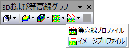

イメージプロファイル
Image-Profile

必要なデータ
- 行列：1つの行列シート。複数オブジェクトを持つシートがサポートされています。
または、
- ワークシート：XYZ列または仮想行列として配置されたワークシートデータ
または、
- イメージ：1つのイメージウィンドウ複数フレームのイメージが利用できます。すべてのフレームをめくる方法については、このページを参照してください。
グラフ作成
行列シートをアクティブにするか、必要なデータをワークシートもしくはイメージウィンドウで選択します。
メニューからを選択します。
または、
「3Dおよび等高線グラフ」ツールバーのイメージプロファイルボタンをクリックします。

テンプレート
PROFILES.OTP (Originのプログラムフォルダにインストールされています。)
ノート
- 行列イメージ/イメージは、XとYの投影を含むイメージプロットとして作成されます。
- このインタフェースでは、イメージデータの水平、垂直、および任意の線分プロファイルを動的に作成できます。 マウスでクリックして最初に線を選択してから移動します。
- イメージプロファイリングの詳細は、ユーザガイドのこのページを参照して下さい。